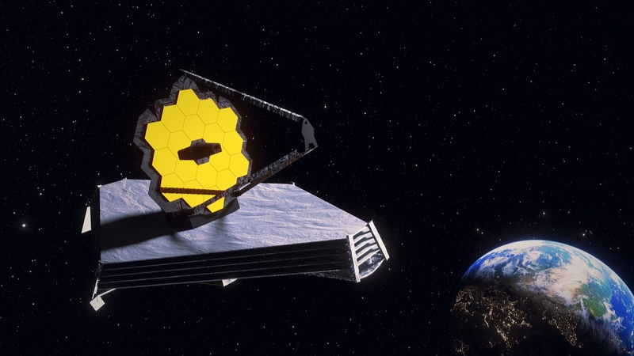

JAMES WEBB: O telescópio mais poderoso
A tecnologia dos telescópios vem melhorando a cada dia que passa, e a NASA junto com a Agência Espacial Europeia (ESA) e Agência Espacial Canadense (CSA), teve a finalidade de construir o telescópio mais poderoso, o Telescópio espacial James Webb (JWST).
Finalidade do James Webb
A finalidade de colocar no espaço um observatório é para captar a radiação infravermelha. O James Webb foi lançado no dia 25 de dezembro de 2021 a bordo do foguete ariane 5, o lançamento foi feito no centro espacial de kourou na Guiana Francesa.
Ao contrário do telescópio Hubble que está a cerca de 500 km acima da superfície do nosso planeta, o James Webb ficará 1,5 milhões de quilômetros da superfície do planeta Terra em uma região do espaço conhecida como ponto de Lagrange L2 no sistema formado pela Terra e o Sol.
Obijetivo do James Webb
O telesc√≥pio espacial James Webb tem o foco primário na astronomia infravermelha. A inten√ß√£o dese telesc√≥pio √© pesquisar a luz das primeiras estrelas e galáxias que se formaram no universo ap√≥s o Big Bang üîó, estudar a forma√ß√£o e a evolu√ß√£o das galáxias, entender a forma√ß√£o de estrelas e sistemas planetários e estudar os sistemas planetários e as origens da vida.